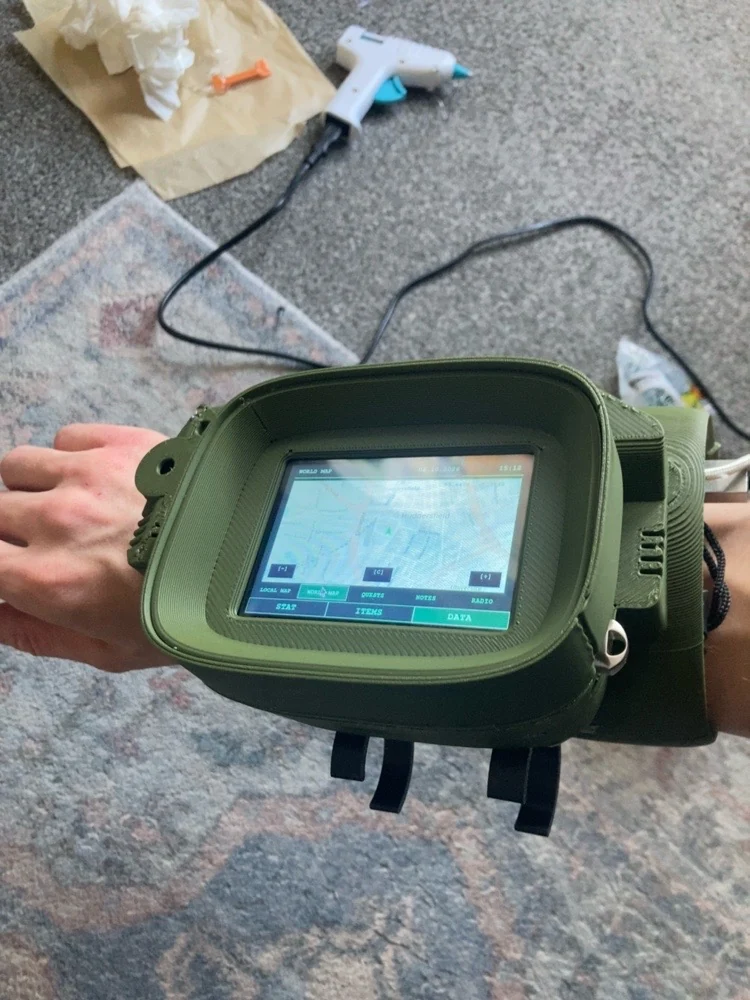

In this article
A portfolio that became somewhere to make things
Bootleg OS began with the remains of an older university portfolio. I wanted to recover the work, give it a clearer home and explain projects that had previously been reduced to a screenshot or a file in a folder.
Once the applications started working inside the site, the project became more interesting. A visitor could use the weather app, tune the radio, make pixel art or explore a physical build. The portfolio became a place I wanted to return to myself.
Give old work its context back
Some projects came from university briefs. Others started as personal experiments, client work, graphics or ideas I kept thinking about after a course had ended. They should not all be presented as if they had the same audience or reached the same stage.
The case studies now make room for sketches, revisions, physical prototypes and the things that did not quite work. The Pi-Boy is a good example: the poster, interface experiments, printed casing and working Pygame application tell a more useful story together than any one image could.

The tools should do something useful
A working tool says more than a screenshot of a tool. The background remover, Pixel Studio, clocks, link scraper and weather app let visitors try the interactions while I keep learning how to improve them.
That makes the site a testing ground as well as an archive. A feature can start small, receive feedback and change. The background remover’s edge handling, brush previews and export tools have all improved through that process. Pixel Studio has grown from a drawing grid into layers, animation and sprite import.
Building it in public
The current site has been rebuilt around warmer sunset colours, more readable project pages and a blog with space for both practical instructions and personal experience. There is a working reel, a radio, a growing gallery and Boots keeping an eye on the corners.
It has not been a straight line. Some recovered assets came in several versions; some media links disappeared; layouts that felt comfortable on a desktop needed another pass on a phone. Those are real parts of maintaining a website, rather than embarrassing details to hide behind a polished final image.
Boots, Broadcast and the next build
Boots is a local, rule-based pixel guide. She can point people towards articles, explain the tools and answer a few time or weather questions through the site’s existing services. She is also an excuse to work on sprites, animation states and a little personality.
Bootleg Broadcast takes the fascination with old television into its own project, with channels, schedules and idents. The native Pi TV adaptation brings another part of that idea onto dedicated hardware. A jukebox and an arcade cabinet are plans to explore, rather than finished products to pretend I have already made.
A site I can keep returning to
The aim is to keep the useful pieces connected: a post can lead to a tool, a project can lead to its sketches, and an old university idea can turn into a new application. I want the work to keep moving instead of being frozen at the date of a final submission.
That also means keeping the code and assets understandable enough to revisit. Bootleg OS is hosted through GitHub Pages, and the public repository records the changes. It is a growing record of what I make and what I am learning to make next.